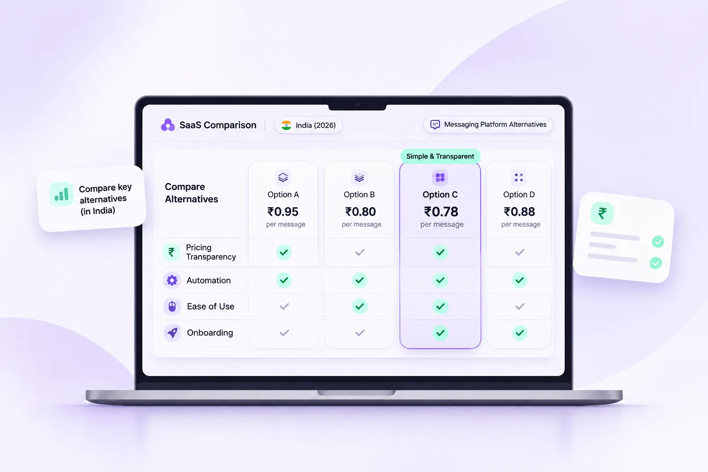

Best Wati & AiSensy Alternatives in India (2026): Pricing & Features

If you're considering a Wati or AiSensy alternative, compare your full messaging bill and the workflows your team actually needs—not just the subscription headline.
Why businesses compare Wati and AiSensy alternatives
For a growing D2C brand or service team, WhatsApp is often where product questions, quotations, order updates and follow-ups happen. Choosing the wrong software can create unnecessary manual work and confusing bills. But a platform with the lowest headline subscription is not automatically the least expensive option.
Businesses usually compare three things: the overall bill at their actual volume, whether daily workflows are straightforward, and how quickly the team can resolve an issue when messaging stops. Those factors deserve a closer look than broad promises about “unlimited automation”.
It's also important to avoid treating every provider's rate card as identical. Meta sets underlying WhatsApp Business Platform pricing, while software providers may charge their own subscriptions, add-ons or other fees. Get a current written quotation from each provider.
WhatsApp API pricing: separate Meta rates from software fees
Meta now uses per-message pricing for applicable WhatsApp messages, with rates varying by message category, destination and billing rules. The old conversation-based model was replaced in July 2025. Published rates and billing conditions can change, so verify the applicable India-specific Meta rate card before calculating costs.
Some software providers publish a different customer-facing rate card. For example, AiSensy's published pricing currently lists ₹1.09 for marketing messages and ₹0.145 for utility messages to Indian recipients, alongside plan fees. Do not assume another vendor follows exactly the same structure or infer its effective markup without checking the full terms.
Always verify the official Meta WhatsApp pricing documentation and compare costs using your own expected category mix.
Quick comparison: Wati, AiSensy, Notiq and other options
Different platforms suit different business workflows. The table below is a decision-making shortlist, not a certification that every feature or price is available on every plan. Because subscriptions and integrations change, it deliberately avoids invented starting prices or universal markup percentages.
| Platform | Best to evaluate for | Pricing note |
|---|---|---|
| Notiq (pre-launch) | Indian SMBs seeking clear UX and no hidden Meta-rate markup | Final plans and access to be confirmed |
| Wati | Campaigns, automation and established workflows | Check subscription or PAYG terms |
| AiSensy | Indian business campaigns and messaging teams | Published plan and per-message rates |
| Interakt | Commerce-related messaging | Verify plan, integrations and message billing |
| DoubleTick | Mobile-first sales operations | Request current quotation |
| Gallabox | Workflow and chatbot evaluation | Verify automation entitlements |
| Zoko | E-commerce workflows | Verify commerce and usage costs |
1. Notiq — an upcoming simpler alternative for Indian SMBs
Notiq by Bitmint Lab is being developed for Indian small and medium businesses, D2C brands, agencies and coaches that want a straightforward interface and practical customer messaging workflows.
Our key product direction is to separate software charges from underlying Meta WhatsApp message charges, with no hidden Notiq markup on Meta rates. We're also focusing on guided onboarding, a clean shared workspace and useful automation capabilities. Because Notiq is in pre-launch, feature access, service levels and final terms must be confirmed as they become available.
Notiq is not being presented as an already proven, fully released substitute for every competitor. If you value pricing clarity and want to follow an emerging option, consider exploring its early-access information.
2. Interakt — explore for commerce-focused messaging
Interakt is a reasonable platform to evaluate when your team works closely with e-commerce workflows. During a demo, ask how its supported store integrations, notifications and customer support process fit your actual systems.
Check the current plan for your store platform, the cost of additional workflows, and whether campaign features need higher-tier access. The most useful demo is one that follows a real customer order from enquiry to delivery.
3. DoubleTick — evaluate for sales-led conversations
DoubleTick is worth considering for teams where mobile access and sales conversations matter. Test assignment, conversation history, permissions and follow-up ownership with multiple agents rather than relying on a static screenshot.
Ask for the latest mobile app functionality, integrations and subscription terms. Product capabilities can vary with plan and release.
4. Gallabox — assess more involved conversation flows
Gallabox is another option to demo if your team wants structured qualification or multi-step conversational workflows. Build one realistic sample flow and check where human handoff happens.
Consider the effort required to maintain that flow, including its branching conditions, source data and reporting. Verify which functionality is included in the plan you're being quoted.
5. Zoko — consider for Shopify-focused customer journeys
Zoko is an option to explore for businesses with commerce-oriented WhatsApp use cases. Ask how product discovery, order communication and support interactions connect to the tools your team already uses.
Before adopting an e-commerce-centric platform, estimate the cost of your real order volume and confirm how billing, integrations and additional team access work.
6. Wati and AiSensy — include them in your evaluation
A comparison of alternatives should not imply that established vendors are universally worse. Wati offers different subscription approaches, including an India pay-as-you-go option described in its 2026 help documentation. AiSensy publishes its India plan and message rates. Either may be a suitable fit depending on the team's volume and required workflow.
The right question is not which company has the most impressive feature list. It is whether that company offers the particular integrations, onboarding support, accountability and monthly total your team needs.
Checklist: choose the WhatsApp platform that fits your business
- Request a written breakdown of Meta charges, platform subscriptions, taxes and any per-message surcharge.
- Check whether you own and control the relevant Meta Business assets and WhatsApp business number.
- Test the shared inbox with multiple agents and a real handoff scenario.
- Confirm supported CRM, store, webhook and API integrations in your intended plan.
- Ask how templates, automation rules, AI credits and customer support are billed.
- Review consent handling, opt-outs, privacy controls and export options.
- Get a realistic migration plan if you're switching from another provider.
Can you migrate your WhatsApp Business API number?
Meta supports moving a registered WhatsApp Business Platform phone number between eligible WhatsApp Business Accounts. However, a migration is not a universal “30-minute, zero-risk” process. Requirements vary with ownership, account status, access, two-step verification, the destination setup and provider cooperation.
Before moving, check Meta's official WhatsApp Business Management API guides, confirm what happens to templates and settings, and plan for testing. Ask the receiving provider to document the steps and any downtime risk.
Frequently asked questions
What is the cheapest Wati or AiSensy alternative in India?
It depends on your message volumes, category mix, subscription, additional seats and automation requirements. A provider with no message markup may still have a software fee; calculate the full bill rather than ranking by the starting price alone.
Does Notiq add a markup to Meta's WhatsApp rates?
Notiq's stated pre-launch pricing direction is zero hidden markup on the underlying Meta message rates, with software and other applicable charges disclosed separately. Check the final commercial terms once published.
Can I switch WhatsApp API providers without losing my number?
Meta supports eligible business-number migration, but technical requirements and timing depend on your current account and destination configuration. Confirm the migration procedure in advance.
Does the official WhatsApp API guarantee my number won't be banned?
No. Using the official API does not remove the obligation to follow Meta's messaging rules, consent requirements and quality standards. Violations can still lead to restrictions.
Looking for a simpler WhatsApp marketing platform?
The right tool should make it easier to respond to customers, run eligible campaigns and understand costs. Bitmint Lab is building Notiq for teams that value clarity over clutter.
Explore the Notiq WhatsApp automation platform and early access →
For pricing fundamentals, read our WhatsApp Business API guide for India or NOTIQ pricing explainer.
Editorial transparency: Notiq is a Bitmint Lab product in pre-launch. Competitor descriptions are decision-making summaries, not exhaustive audits; pricing and capabilities change. Confirm the latest published provider terms, Meta charges and eligibility before purchasing. No unverified performance or customer interviews are claimed.